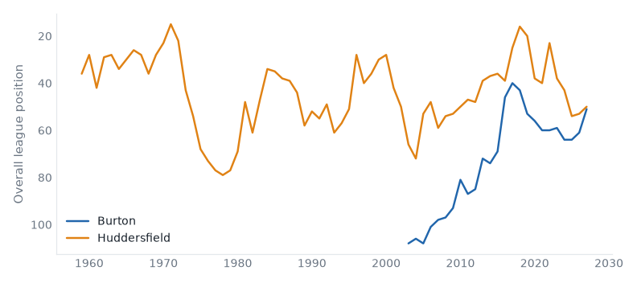
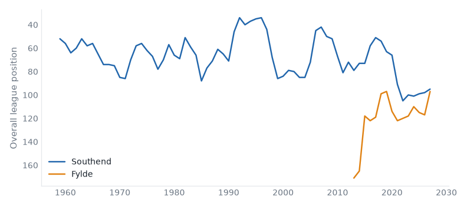

22 fixtures across 3 divisions, week of 03 October 2026.
| Tue | Barrow | 3–0 | Scunthorpe |
| Tue | Boreham Wood | 3–1 | Kidderminster |
| Tue | Forest Green | 1–1 | Wealdstone |
| Tue | Fylde | 0–2 | Carlisle |
| Tue | Gateshead | 0–1 | Altrincham |
| Tue | Halifax | 1–1 | Boston Utd |
| Tue | Hartlepool | 0–1 | Harrogate |
| Tue | Hornchurch | 2–1 | Aldershot |
| Tue | Woking | 2–4 | Solihull |
| Tue | Yeovil | 1–1 | Worthing |
| Wed | Eastleigh | 1–1 | Southend |
| Wed | Tamworth | 2–0 | Sutton |
Burton host Huddersfield in League One on Saturday 03 October. Burton Albion are, on the balance of their record, a League Two club; they are 9 seasons into a spell 1 division above that; they sit 7th with 12 points from 8 games, form WDLDW. Huddersfield Town live between the Championship and League One; they are 1 division below that now; they sit 6th with 12 points from 7 games, form LDDWW. They have met 6 times in league play since 2016/17: Burton Albion 3 wins, Huddersfield Town 1, 2 drawn.

|
|
| Sat 03 | Leyton Orient v Plymouth | fallen giant |
| Sat 03 | Reading v Bradford | fallen giant |
Chesterfield v Tranmere
Sat 03 Oct · below level
Chesterfield 11th (LWWDD), Tranmere Rovers 10th (DDLWD). At least one of them sits below where their record says they belong.
Exeter v Rotherham
Sat 03 Oct · below level
Exeter City 21st (LDLDD), Rotherham United 13th (DWDLD). At least one of them sits below where their record says they belong.
Grimsby v Shrewsbury
Sat 03 Oct · below level
Grimsby Town 6th (LWWDD), Shrewsbury Town 18th (DDWLL). At least one of them sits below where their record says they belong.
| Sat 03 | Accrington v Cheltenham | |
| Sat 03 | Crewe v Bristol Rvs | below level |
| Sat 03 | Gillingham v Newport County | below level |
| Sat 03 | Rochdale v Swindon | fallen giant |
| Sat 03 | Salford v Fleetwood Town | below level |
Southend host Fylde in the National League on Saturday 03 October. Southend United live between League One and League Two; they are 2 divisions below that now; they sit 3rd with 21 points from 11 games, form DLWWD. AFC Fylde live between the National League and the National League North & South; this season is their highest since 2025; they sit 5th with 20 points from 11 games, form LWLWW. They have met 4 times in league play since 2023/24: Southend United 2 wins, AFC Fylde 2, 0 drawn.

|
|
Aldershot v Carlisle
Sat 03 Oct · fallen giant
Aldershot Town 7th (LWLDW), Carlisle United 16th (WLLDD). Carlisle United have played in the top flight.
Gateshead v Worthing
Sat 03 Oct · 2 above level
Gateshead 24th (LLLLL), Worthing 8th (DWWWD). At least one of them sits above where their record says they belong.
Harrogate v Hornchurch
Sat 03 Oct · 2 above level
Harrogate Town 2nd (WWLLW), Hornchurch 10th (WLWLL). At least one of them sits above where their record says they belong.
Hartlepool v Tamworth
Sat 03 Oct · below level
Hartlepool United 22nd (LLLLL), Tamworth 20th (WLWLL). At least one of them sits below where their record says they belong.
Kidderminster v Sutton
Sat 03 Oct · above level
Kidderminster Harriers 9th (LLDWW), Sutton United 11th (LDDWL). At least one of them sits above where their record says they belong.
| Sat 03 | Barrow v Wealdstone | relegated last season |
| Sat 03 | Boreham Wood v Altrincham | neighbours |
| Sat 03 | Eastleigh v Woking | |
| Sat 03 | Solihull v Halifax | below level |
| Sat 03 | Yeovil v Boston Utd |
Reviewed on Monday review, tiers 1–2 and Tuesday review, tiers 3–5.
Built from the English football database, tiers 1–5 from 1958/59. Results from football-data.co.uk. Archived copy.